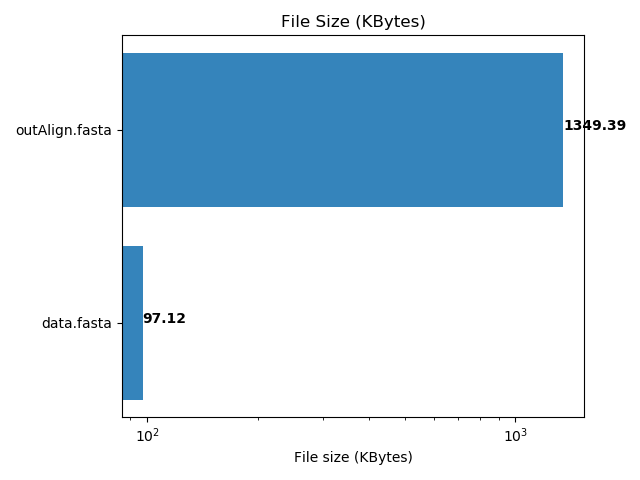
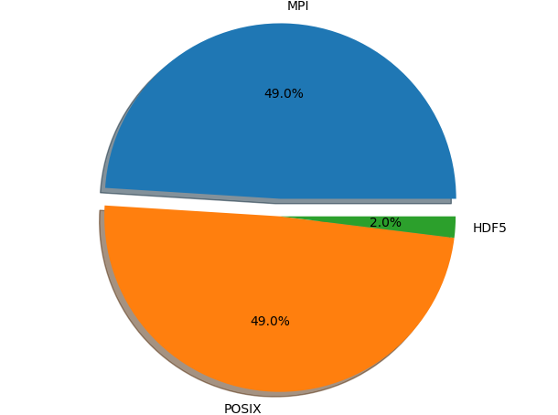
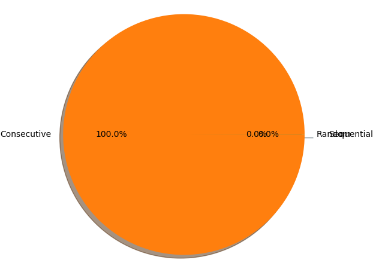
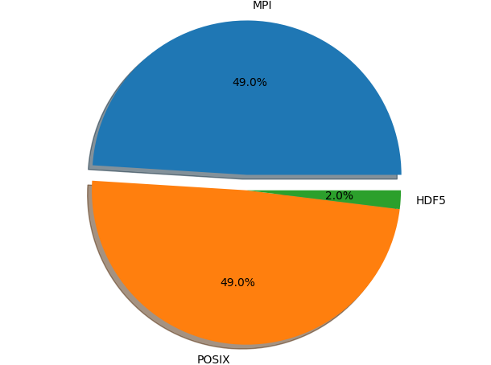
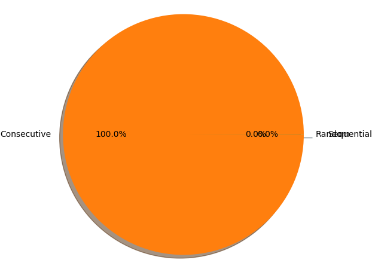
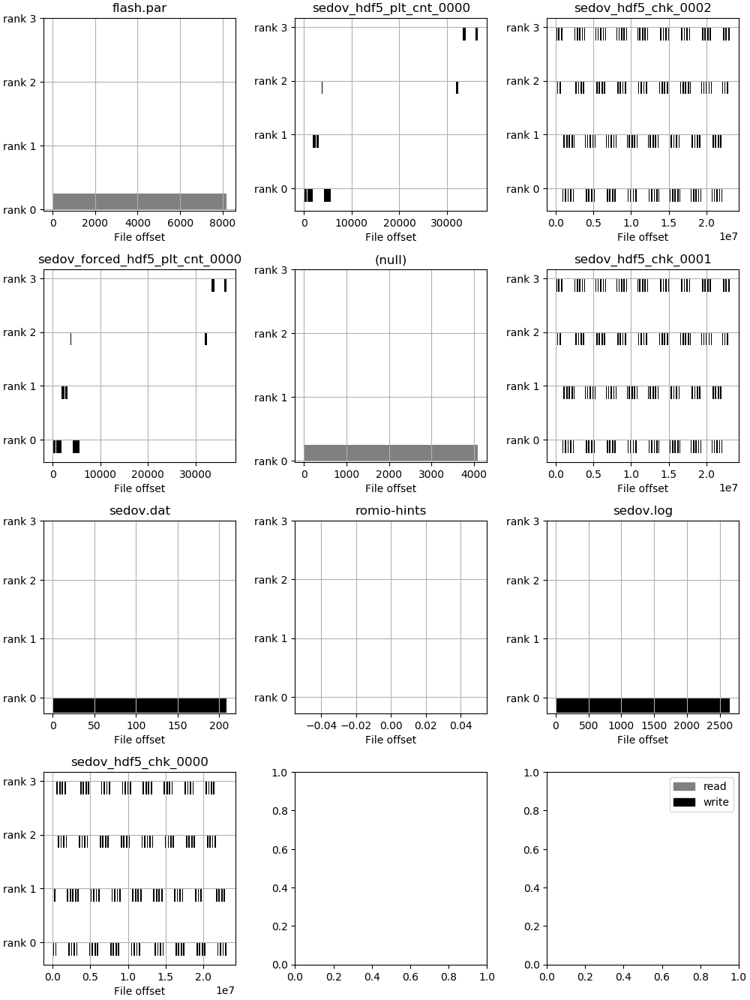
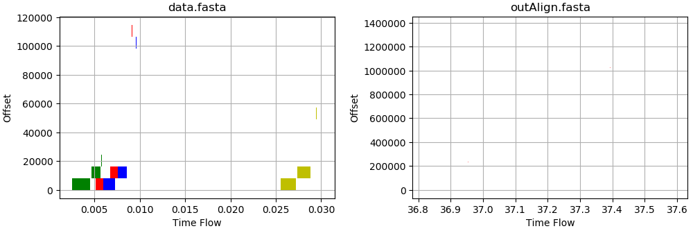

1. File Statistics
1.1 Number of file access by each rank
| Total | Rank 0 | Rank 1 | Rank 2 | Rank 3 | |
|---|---|---|---|---|---|
| Number of file accessed | 2 | 2 | 2 | 2 | 2 |
1.2 Access mode of each file
| File | Read Only | Write Only | Read & Write |
|---|---|---|---|
| data.fasta | True | False | False |
| outAlign.fasta | False | True | False |
1.3 File Sizes
 2. Function Statistics
2.1 I/O Layers

2.2 POSIX I/O Patterns

2.3 Fcount count
2.1 I/O Layers
2.2 POSIX I/O Patterns
| Function name | Rank 0 | Rank 1 | Rank 2 | Rank 3 |
|---|---|---|---|---|
| MPI_Comm_rank | 22 | 22 | 22 | 22 |
| fopen64 | 2 | 2 | 2 | 2 |
| read | 14 | 14 | 14 | 14 |
| fclose | 1 | 1 | 1 | 1 |
| mmap | 49 | 45 | 49 | 45 |
| MPI_Comm_size | 23 | 21 | 21 | 21 |
| MPI_Bast | 1 | 1 | 1 | 1 |
| MPI_Allreduce | 1 | 1 | 1 | 1 |
| write | 22960 | 0 | 0 | 0 |
3. Access Patterns
3.1 Accessed offsets VS ranks
3.2 Accessed offsets VS time
3.3 File access patterns
| File | R->R (self) | R->R (others) | R->W (self) | R->W (others) | W->R (self) | W->R (others) | W->W (self) | W->W (others) |
|---|---|---|---|---|---|---|---|---|
| data.fasta | False | True | False | False | False | False | False | False |
| outAlign.fasta | False | False | False | False | False | False | True | False |